UNIONS: weak lensing in the northern sky
Calum Murray and Cail Daley
Calum's half (~15 min) of the joint talk; Cail follows with the cosmology (UNIONS-WL/talk-ade-2026). The spinning globe is the UNIONS press-release animation (July 2026; calumhrmurray.github.io/press-releases.html, assets/unions/unions_globe.mp4): the UNIONS-3500 convergence map in blue on the Gaia sky. Visualisation: Calum Murray, Cail Daley and Andreas Tersenov; sky background ESA/Gaia/DPAC.
The UNIONS weak-lensing group
The UNIONS weak-lensing meeting in Paris.
Cosmic shear · UNIONS-3500 I–IV
L. Baumont · C. Bonini · J.-C. Cuillandre · C. Daley · T. de Boer · S. Fabbro · L. W. K. Goh · S. Guerrini · A. Guinot · F. Hervas Peters · H. Hildebrandt · M. J. Hudson · M. Kilbinger · E. Magnier · A. W. McConnachie · C. Murray · A. Paradis · A. Tersenov · L. Van Waerbeke · A. Wittje · A. H. Wright
Astrophysics in this talk
S. L. Ahad · R. Akhmetshyn · M. C. T. Campbell · A. Corinaldi · J. Elvin-Poole · F. Hervas Peters · C. T. Mpetha · R. Paviot · J. E. Taylor · and the cosmic-shear group
PHOTO: the group photo from the UNIONS meeting in Paris, taken from slide 5 of Sacha's Moriond 2026 talk (sachaguer.github.io/talks/26_Moriond_UNIONS, images/unions_team.jpg), cropped to the frame. The file carries no date; autumn leaves and a talk given in March 2026 suggest autumn 2025, so the caption gives no year: add it if you know it.
Names: the union of the author lists of UNIONS-3500 Weak Lensing I–IV (arXiv:2605.13549, 2604.03227, 2605.13547, 2605.13543), alphabetical; bold = first authors (I Hervas Peters, II Daley, III Goh, IV Guerrini). This is the group as the papers define it, not a membership list: CHECK it against the real cosmology-group roster, which I could not find written down; add or drop names before the talk.
Second line: lead authors of the papers on slides 6–13 in bold (Campbell et al. 2026, Ahad et al. 2025, Akhmetshyn et al. 2026, Hervas Peters et al. 2024, Paviot et al. 2026) plus co-authors not already above; Antonin Corinaldi for the DESI DR1 slide. Plus Sandrine Codis on the IA work if you want her named.
UNIONS images the northern sky from Mauna Kea
CFHT r and u, Pan-STARRS i, Subaru g and zMore than 5,000 deg² above Dec ≈ +30°
Depth comparable to LSST Year 1
Median r-band seeing 0.7″: the shapes for weak lensing
UNIONS: Gwyn et al. 2025. Figure from S. Guerrini, Moriond 2026.
UNIONS = Ultraviolet Near-Infrared Optical Northern Survey: CFIS (CFHT r, u), WISHES and WHIGS (Subaru HSC z, g), Pan-STARRS (i). The numbers on the slide are those in the joint deck's scaffold (more than 5,500 deg², LSST-Y1-like depth, median r seeing 0.7″); "more than 5,000" here, to be safe: check the exact area against Gwyn et al. 2025 before the talk.
Weak-lensing shapes are measured on the CFHT r band with ShapePipe (Guinot et al. 2022); UNIONS-3500 is the ~3,500 deg² used for Cail's cosmic shear.
Image: Sacha Guerrini's Moriond 2026 deck (sachaguer.github.io/talks/26_Moriond_UNIONS, images/unions.jpg).
The south has DES, KiDS and HSC; UNIONS covers the north
No overlap with the other Stage-III lensing surveys
A different telescope, different systematics, independent sky
Orange outline: the final UNIONS footprint (DR6). Filled: UNIONS-3500, the first shear release.
Movie, 12 s, plays once: the globe starts on the southern sky (DES, KiDS-South), swings round the equator (KiDS-North, the HSC equatorial fields) and climbs to the north, where UNIONS sits above Dec +30.
Footprints: DES Y6 round-19 outline (kadrlica/skymap); KiDS-1000 and HSC-SSP PDR3 Wide drawn as their published RA/Dec field limits, good to a degree or two; UNIONS filled = the UNIONS-3500 shear footprint (from the mass-map globe, visualisation/unions); UNIONS outline = the final footprint, the DR6 tiles (CANFAR ugriz mask_stats, 23,114 tiles, ~5,800 deg²). Note DR6 includes ~100 tiles inside DES (Stripe 82 near RA 330, and the CFHTLS-W1 area near RA 33, Dec −6): the outline shows them as small islands in the south. Background: Gaia EDR3 in equatorial coordinates. RA increases to the left, as on the sky. Script: scripts/globe.py movie.
Careful with "no overlap": HSC's HectoMap field (RA 200–250, Dec +42.5 to +44.5, ~100 deg²) lies inside the UNIONS footprint, as the last frame shows. Cail's "north" slide says zero overlap with HSC; agree the wording with him.
UNIONS among weak-lensing surveys: Stage III area, in the north
Figure: Angus Wright.
Axes — survey area against effective source density; curves of constant total number of lensing sources (1 million to 1 billion).Markers — the square's dot is the detection PSF FWHM; blue = measured, pink = forecast. Colour bars are each survey's wide-field bands.UNIONS — area comparable to DES Y3, density a little higher, $ugriz$ from CFHT, Pan-STARRS and Subaru, all in the northern sky.Stage IV — LSST, Euclid, Roman and CSST sit up and to the right; UNIONS is the large northern Stage III-scale sample before them.
UNIONS sees sharper than DES: 0.71″ against 0.95″ in r
0.71″
median r-band seeing of UNIONS, CFHT on Mauna Kea
0.95″
DES Y6 (DR2), the Blanco 4 m in Chile
Similar depth: r ≈ 24.2 (UNIONS) and 24.4 (DES) at 10σ
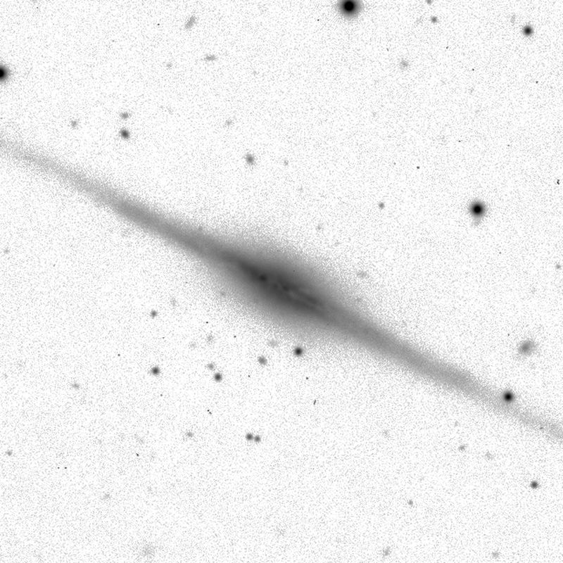
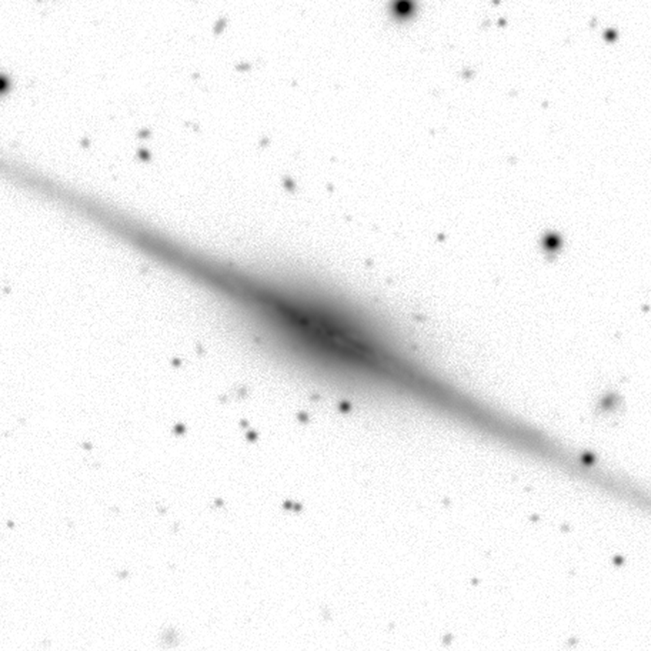
UNIONS r · 0.73″ here
DES Y6 r · 0.90″ here
The same 2′ of Stripe 82, where the surveys overlap; north up, fluxes matched on the stars, one stretch.
Survey medians, r band: UNIONS 0.71″ (Gwyn et al. 2025, arXiv:2503.13783; also Sacha's Moriond slide 4, "FWHM in the r-band ~0.7″ (DES ~0.98″)"); DES DR2 0.95″ median delivered PSF FWHM (DES Collaboration 2021, arXiv:2101.05765, abstract; DR2 = the six years of DES wide imaging, i.e. the Y6 images). Depths: UNIONS r 24.2 (10σ point source, 2″ aperture, Gwyn+2025 Table 3); DES DR2 r 24.4 (S/N = 10, 1.95″ aperture). So: about as deep, a third sharper.
Images: the same patch of Stripe 82, centre RA 329.531, Dec +1.009, 120″ across, where UNIONS DR6 overlaps DES (~100 tiles). UNIONS: tile CFIS.659.182.r (vos:cfis/tiles_DR5), 0.186″/px, 1200 s; header IQ 0.80″. DES: DR2 coadd DES2157+0043 r, 0.263″/px, via the NOIRLab Data Lab cutout service. Both north up and east left; the UNIONS fluxes scaled to DES's by the median ratio over 69 matched sources (1.02); one asinh stretch. Measured stellar FWHM (Moffat fits): UNIONS 0.73″ (37 stars), DES 0.90″ (47 stars).
What to point at: the dust lane in the edge-on disc and the small round galaxies, tighter in UNIONS. The DES background is smoother because this DES coadd is deeper (sky noise 2.6× lower here); the point is the sharpness, which is what shapes need. The few black specks in the UNIONS image are residual cosmic rays or hot pixels.
Scripts: scripts/seeing/ (pair.py, measure.py, INPUTS.txt).
Every UNIONS paper on arXiv, November 2026
66 papers so far, from the Milky Way to cosmology
Survey and data · 3 papers
The survey paper (Gwyn+25); CFIS u band (Ibata+17); calibration (Thanjavur+21) Weak lensing pipelines · 7 papers
ShapePipe (Guinot+22, Farrens+22); the MCCD PSF model (Liaudat+20) PSF systematics (Zhang+24, Guerrini+24) UNIONS-3500 shapes and B modes (Hervas Peters+26, Daley+26) Cosmology · 7 papers
Peak counts and their systematics (Ayçoberry+22) Cosmology from the infall region of clusters (Mpetha+25) fNL from Lyman-break galaxies × Planck lensing: forecast and first measurement (Payerne+25, +26) 2D cosmic shear in configuration and harmonic space (Goh+26, Guerrini+26) Lensing is low, revisited (Campbell+26) Clusters and voids · 7 papers
Cluster dynamical state (Ahad+25); fossil-group central galaxies (Chu+23) Satellite subhalo masses (Akhmetshyn+26) The density profile of voids (Martin+25) Galaxy haloes: shapes (Robison+22), black holes (Li+24), mergers (Cheng+25) Intrinsic alignments · 3 papers
BOSS/eBOSS galaxies (Hervas Peters+24) DESI DR1, red and blue (Paviot+26) Discs in the Perseus-Pisces supercluster (Mondelin+26) Strong lensing
Galaxy evolution
Milky Way and Local Group
UNIONS papers on arXiv as of 2 November 2026: 66. Search: the arXiv API for UNIONS, CFIS, "Canada-France Imaging Survey" or "Ultraviolet Near-Infrared Optical Northern Survey" in title or abstract (astro-ph); each abstract read, and a paper kept only if it uses UNIONS/CFIS data or is a UNIONS pipeline. This is "papers using UNIONS data", not the collaboration's own publication list: the early CFIS Milky Way papers and Mondelin+25/26 (CFHT imaging, mostly UNIONS) are included on that basis. Dropped on re-reading: Payerne+24 (LBG selection on HSC/CLAUDS degraded to UNIONS depth, no UNIONS data), Mpetha+24 (mainly a Euclid forecast), Farrens+21 (BlendHunter, CFIS-like simulations). Not included: papers that only name UNIONS (roadmaps, a footprint tool, theory follow-ups of Ursa Major III/UNIONS 1). Papers that use UNIONS without saying so in the abstract are missed.
f_NL (Constantin Payerne, two papers): 2511.22243 forecasts σ(f_NL^loc) ≈ 20–34 from UNIONS u-dropout LBGs × Planck CMB lensing (A&A 709, A70, 2026); 2607.09943 measures the LBG × Planck PR4 lensing cross-spectrum on real UNIONS data, with a first, very uncertain f_NL^loc (not yet competitive). Check the paper before quoting a number.
"Clusters and voids" also holds three galaxy-scale halo papers (Robison+22, Li+24, Cheng+25), on one line.
Survey and data (3): Ibata 2017, The Canada-France Imaging Survey: First results from the u-band component, arXiv:1708.06356; Thanjavur 2021, Photometric Cross-Calibration of the SDSS Stripe 82 Standard Stars catalogue with Gaia EDR3, and Comparison with Pan-STARRS1, DES, CFIS and GALEX catalogues, arXiv:2105.08200; Gwyn 2025, UNIONS: The Ultraviolet Near-Infrared Optical Northern Survey, arXiv:2503.13783
Weak lensing pipelines (7): Liaudat 2020, Multi-CCD Point Spread Function Modelling, arXiv:2011.09835; Guinot 2022, ShapePipe: a new shape measurement pipeline and weak-lensing application to UNIONS/CFIS data, arXiv:2204.04798; Farrens 2022, ShapePipe: A modular weak-lensing processing and analysis pipeline, arXiv:2206.14689; Zhang 2024, Point-Spread Function errors for weak lensing - density cross-correlations. Application to UNIONS, arXiv:2405.03434; Guerrini 2024, Galaxy-Point Spread Function correlations as a probe of weak-lensing systematics with UNIONS data, arXiv:2412.14666; Daley 2026, UNIONS-3500 Weak Lensing: II. B-mode validation for cosmic shear, arXiv:2604.03227; Hervas Peters 2026, UNIONS-3500 Weak Lensing: I. A Galaxy Shape Catalogue in the Northern Sky, arXiv:2605.13549
Cosmology (7): Ayçoberry 2022, UNIONS: The impact of systematic errors on weak-lensing peak counts, arXiv:2204.06280; Mpetha 2025, Cosmology from UNIONS weak lensing profiles of galaxy clusters, arXiv:2501.09147; Payerne 2025, Forecasting local Primordial Non-Gaussianities from UNIONS Lyman-Break Galaxies and Planck CMB lensing, arXiv:2511.22243; Goh 2026, UNIONS-3500 Weak Lensing: III. 2D Cosmological Constraints in Configuration Space, arXiv:2605.13547; Guerrini 2026, UNIONS-3500 Weak Lensing: IV. 2D cosmological constraints in harmonic space, arXiv:2605.13543; Campbell 2026, Revisiting the 'Lensing is Low' Problem with UNIONS, arXiv:2606.23651; Payerne 2026, Assessing the large-scale angular clustering of UNIONS Lyman Break Galaxies via cross-correlations, arXiv:2607.09943
Clusters and voids (7): Robison 2022, The shape of dark matter haloes: results from weak lensing in the Ultraviolet Near-Infrared Optical Northern Survey (UNIONS), arXiv:2209.09088; Chu 2023, A UNIONS view of the brightest central galaxies of candidate fossil groups, arXiv:2303.05146; Li 2024, Black-Hole-to-Halo Mass Relation From UNIONS Weak Lensing, arXiv:2402.10740; Cheng 2025, Unions with UNIONS: Using galaxy-galaxy lensing to probe galaxy mergers, arXiv:2502.00584; Martin 2025, Lensing the darkness: The matter density profile in cosmic voids from UNIONS, arXiv:2507.13450; Ahad 2025, Cluster properties as a function of dynamical state in the DESI Legacy x UNIONS surveys, arXiv:2512.14636; Akhmetshyn 2026, Measuring satellite galaxy subhalo masses in redMaPPer clusters with UNIONS weak lensing data, arXiv:2607.14207
Intrinsic alignments (3): Hervas Peters 2024, UNIONS: a direct measurement of intrinsic alignment with BOSS/eBOSS spectroscopy, arXiv:2412.01790; Mondelin 2026, Dissecting the Perseus-Pisces supercluster observed with CFHT-MegaCam: Exploring late-type galaxy shape alignments within the local cosmic web, arXiv:2605.23338; Paviot 2026, UNIONS: Red and blue alignments of DESI DR1 galaxies, arXiv:2610.40411
Strong lensing (4): Chan 2021, Discovery of Strongly Lensed Quasars in the Ultraviolet Near Infrared Optical Northern Survey (UNIONS), arXiv:2110.09535; Savary 2021, Strong lensing in UNIONS: Toward a pipeline from discovery to modeling, arXiv:2110.11972; Barroso 2025, Searching for strong lensing by late-type galaxies in UNIONS, arXiv:2503.10610; Storfer 2025, Gravitational Lenses in UNIONS and Euclid (GLUE) I: A Search for Strong Gravitational Lenses in UNIONS with Subaru, CFHT, and Pan-STARRS Data, arXiv:2505.05032
Galaxy evolution (20): Ellison 2019, A definitive merger-AGN connection at z~0 with CFIS: mergers have an excess of AGN and AGN hosts are more frequently disturbed, arXiv:1905.08830; Bickley 2021, Convolutional neural network identification of galaxy post-mergers in UNIONS using IllustrisTNG, arXiv:2103.09367; Roberts 2021, Ram Pressure Candidates in UNIONS, arXiv:2110.12714; Sola 2022, Characterization of Low Surface Brightness structures in annotated deep images, arXiv:2203.03973; Lim 2022, Constraints on galaxy formation from the cosmic-far-infrared-background\,$-$\,optical-imaging cross-correlation using \textit{Herschel} and UNIONS, arXiv:2203.16545; Bickley 2022, Star formation characteristics of CNN-identified post-mergers in the Ultraviolet Near Infrared Optical Northern Survey (UNIONS), arXiv:2205.14103; Wilkinson 2022, The merger fraction of post-starburst galaxies in UNIONS, arXiv:2207.04152; Ellison 2022, Galaxy mergers can rapidly shut down star formation, arXiv:2209.07613; Ferreira 2024, Galaxy Mergers in UNIONS -- I: A Simulation-driven Hybrid Deep Learning Ensemble for Pure Galaxy Merger Classification, arXiv:2407.18396; Ferreira 2024, Galaxy evolution in the post-merger regime I -- Most merger-induced in-situ stellar mass growth happens post-coalescence, arXiv:2410.06356; Ellison 2024, Galaxy evolution in the post-merger regime. II -- Post-merger quenching peaks within 500 Myr of coalescence, arXiv:2410.06357; Ellison 2024, Galaxy evolution in the post-merger regime. III -- The triggering of active galactic nuclei peaks immediately after coalescence, arXiv:2412.02804; Foster 2025, No Evidence of Asymmetrically Enhanced Star Formation in Infalling Galaxies in UNIONS, arXiv:2502.13123; Sola 2025, Low Surface Brightness structures from annotated deep CFHT images: effects of the host galaxy's properties and environment, arXiv:2503.18480; Yoshida 2025, Dust-obscured Galaxies with Broken Power-law Spectral Energy Distributions Discovered by UNIONS, arXiv:2504.15023; Heesters 2025, Galaxies OBserved as Low-luminosity Identified Nebulae (GOBLIN): a catalog of 43,000 high-probability dwarf galaxy candidates in the UNIONS survey, arXiv:2505.18307; Zhong 2025, UNIONS Optical Identifications for VLASS Radio Sources in the Euclid Sky (UNVEIL) I. A Catalog of ~146,000 Radio Galaxies up to z~5, arXiv:2507.08604; Mondelin 2025, Dissecting the Perseus-Pisces supercluster observed with CFHT-MegaCam: Investigating environmental effects on galaxy morphology, arXiv:2511.05925; Ferreira 2026, Galaxy Mergers in UNIONS -- II: Predicting Timescales in the Post-Merger Regime, arXiv:2601.07604; Chang 2026, Merger Driven or Internal Evolution? A New Morphological Study of Tidal Disruption Event Host Galaxies, arXiv:2602.06839
Milky Way and Local Group (15): Ibata 2017, Chemical Mapping of the Milky Way With The Canada-France Imaging Survey: A Non-parametric Metallicity-Distance Decomposition of the Galaxy, arXiv:1708.06359; Thomas 2018, A-type stars in the Canada-France Imaging Survey I. The stellar halo of the Milky Way traced to large radius by blue horizontal branch stars, arXiv:1809.08245; Thomas 2018, A-type stars in the Canada-France Imaging Survey II. Tracing the height of the disc at large distances with Blue Stragglers, arXiv:1810.09461; Thomas 2019, Dwarfs or giants? Stellar metallicities and distances in the Canada-France-Imaging-Survey from $ugrizG$ multi-band photometry, arXiv:1910.03076; Fantin 2019, The Canada-France Imaging Survey: Reconstructing the Milky Way Star Formation History from its White Dwarf Population, arXiv:1911.02576; Thomas 2020, The hidden past of M92: Detection and characterization of a newly formed 17° long stellar stream using the Canada-France Imaging Survey, arXiv:2009.04487; Fantin 2021, The Mass and Age Distribution of Halo White Dwarfs in the Canada-France Imaging Survey, arXiv:2103.14721; Jensen 2021, Uncovering fossils of the distant Milky Way with UNIONS: NGC 5466 and its stellar stream, arXiv:2108.04340; Smith 2022, Discovery of a new Local Group Dwarf Galaxy Candidate in UNIONS: Boötes V, arXiv:2209.08242; Smith 2023, The discovery of the faintest known Milky Way satellite using UNIONS, arXiv:2311.10147; Errani 2023, Ursa Major III/UNIONS 1: the darkest galaxy ever discovered?, arXiv:2311.10134; Crnogorčević 2023, Strong Constraints on Dark Matter Annihilation in Ursa Major III/UNIONS 1, arXiv:2311.14611; Smith 2025, Deep in the Fields of the Andromeda Halo: Discovery of the Pegasus VII dwarf galaxy in UNIONS, arXiv:2502.09792; Bayer 2025, A Pristine-UNIONS view on the Galaxy: Kinematics of the distant spur feature of the Sagittarius stream traced by Blue Horizontal Branch stars, arXiv:2502.17319; Cerny 2025, No Observational Evidence for Dark Matter Nor a Large Metallicity Spread in the Extreme Milky Way Satellite Ursa Major III / UNIONS 1, arXiv:2510.02431
A cluster's centre records how it was assembled
Evolved
Evolving
Abell 2261, z = 0.22: one dominant galaxy, a large magnitude gap
Abell 1758N, z = 0.28: several bright galaxies, a small gap
Dynamical friction pulls the most massive satellites in first, and the central galaxy absorbs them
Early-forming clusters have had time: one dominant galaxy, mass concentrated in the core
Light only hints at this; lensing weighs the mass profile itself
The set-up for Ahad et al. Dynamical friction is strongest on the most massive satellites, so they sink to the centre first and merge with the brightest cluster galaxy (BCG). A cluster that assembled early has had time for this: one dominant BCG, a large gap in magnitude to the next-brightest galaxy (the "fossil group" limit is Δm₁₂ > 2 mag in r). A cluster still assembling, with recent mergers, keeps several bright galaxies of similar luminosity and a small gap.
Earlier formation also means a more concentrated halo, which is what lensing can test without relying on the light. Ahad et al. select on the magnitude gap between the BCG and the brightest satellite, and on the stellar-mass ratio of the BCG to the third most massive satellite (next slide, left).
Drawing: schematic, made for this deck.
The images (Legacy Surveys DR9 grz, fig/clusters/): left, Abell 2261 (z = 0.225, RA 260.613, Dec +32.134; NED), relaxed, with one of the largest BCGs known; the field is 5.5′ ≈ 1.2 Mpc. Right, Abell 1758N (z = 0.278, RA 203.188, Dec +50.542; NED), the northern half of a double cluster, itself a merger of two subclusters, each with its own bright galaxies; 4.75′ ≈ 1.2 Mpc. These are well-known illustrations chosen for this slide, not clusters from Ahad et al.; say so if asked. The faint green haze in the right image is a Legacy Surveys sky-subtraction artefact, not the cluster.
Ahad et al. 2025
Lensing tells evolved clusters from evolving ones
DESI Legacy clusters, UNIONS shear
Evolved : one dominant central galaxy; more mass in the coreEvolving : bright satellites, flatter centreThe same split in IllustrisTNG traces different accretion histories
Ahad et al. 2025, "Cluster properties as a function of dynamical state in the DESI Legacy × UNIONS surveys", arXiv:2512.14636. Left: their Fig. 1 (selection: r-band magnitude gap between the BCG and the brightest satellite against the log stellar-mass ratio of the BCG to the third most massive satellite). Right: their Fig. 8 (ΔΣ of the stacks).
Clusters photometrically selected from the DESI Legacy Imaging Surveys, crossed with the UNIONS shear catalogue. Beyond 1 Mpc the two profiles agree in amplitude; within 1 Mpc evolved clusters are significantly more concentrated. Evolved: bimodal stellar mass functions dominated by massive BCGs, a deficit of intermediate satellites; evolving: an excess of massive satellites. Mean halo mass ~10^14 and z ~ 0.33 in both.
The cluster's tide strips a satellite from the outside in
A satellite keeps only what its own gravity holds against the cluster's tide
Tidal radius \( r_t \approx r \left( \frac{m_{\rm sub}}{3M(<r)} \right)^{1/3} \): smaller nearer the centre
Dark matter reaches far beyond the stars, so it goes first; the stars sit deep in the potential
Prediction: Msub /M★ falls towards the cluster centre
Stripping, seen: NGC 2207 pulls a tail out of IC 2163. Left: Perseus (Euclid); dashed, each satellite's halo, shrinking towards the centre.
The physics behind the next slide. A satellite orbiting inside a cluster feels the difference between the cluster's pull on its near and far sides. Beyond the tidal (Jacobi) radius that difference beats the satellite's own gravity, and the material there is lost, leading and trailing along the orbit.
The formula on the slide is the point-mass, circular-orbit Jacobi radius (Binney & Tremaine §8.3). For an extended host it becomes r_t = r [m_sub / ((3 − dlnM/dlnr) M(<r))]^(1/3) (King 1962). For any host whose enclosed mass grows more slowly than r³, which is every real halo, r_t shrinks as the satellite goes deeper.
Dark-matter halos extend ~10× further than the stellar body, so stripping removes dark matter long before it touches the stars: the subhalo-to-stellar mass ratio falls towards the cluster centre. Simulations show subhalos losing most of their mass after a few pericentres while keeping their stars (e.g. Peñarrubia et al. 2008; Smith et al. 2016).
Drawing: schematic, made for this deck; sizes not to scale.
Images: left, the Perseus cluster from the Euclid Early Release Observations (ESA/Euclid/Euclid Consortium/NASA; image processing J.-C. Cuillandre, G. Anselmi; CC BY-SA 3.0 IGO), with Calum's rings and satellites from his IAP seminar (17 February 2026, pages 28–29), redrawn so that each satellite's dark-matter halo (dashed) shrinks with its tidal radius, r_t ∝ r for a fixed mass ratio: the stars (orange) stay the same. Right, NGC 2207 tidally stripping IC 2163 (NASA/ESA and the Hubble Heritage Team, STScI), seminar page 27. The measurement is the next slide, Roman Akhmetshyn's.
Akhmetshyn et al. 2026
Satellites lose their dark matter as they fall into clusters
Lensing around 330k redMaPPer satellites
Msub /M★ rises from 12 near the centre to 34 further out
Stars stay; dark matter is stripped
Akhmetshyn et al. 2026, "Measuring satellite galaxy subhalo masses in redMaPPer clusters with UNIONS weak lensing data", arXiv:2607.14207. Left: redrawn for this deck as inline SVG from their halo_demo.png (fig/stripping_demo.png, a Monte-Carlo host-halo term around a satellite at distance r): the lensing around each satellite, measured in annuli centred on it, is the sum of the stars (point mass), the truncated subhalo and the host halo, offset by r. Right: SMHM_comp_updated (M_sub/M★ against cluster-centric distance, green = this paper, others = earlier measurements with CS82, KiDS, DECaLS, CFHTLenS, HSC).
Data: redMaPPer SDSS DR8 clusters and members × UNIONS ShapePipe v1.3 sources, dsigma. Satellites with P_mem > 0.8 in three bins: 204,000 / 106,586 / 18,865. Best fit M_sub/M★: 12.0 (+3.9 −3.3) at 0.14–0.43 Mpc, 33.7 (+5.5 −5.2) at 0.43–0.86 Mpc; the third bin (0.86–1.23 Mpc) is ~50 on the figure, read off it, not from their table, which was cut in the source I read. Model: stellar + subhalo + offset host-halo terms, BCG miscentring as a Rayleigh distribution.
Reading: the subhalo-to-stellar mass ratio grows with cluster-centric distance, as tidal stripping predicts. Their own caveat: the simple model fits near the satellite but not the larger distances where the host halo dominates.
Every galaxy forms inside the large-scale tide
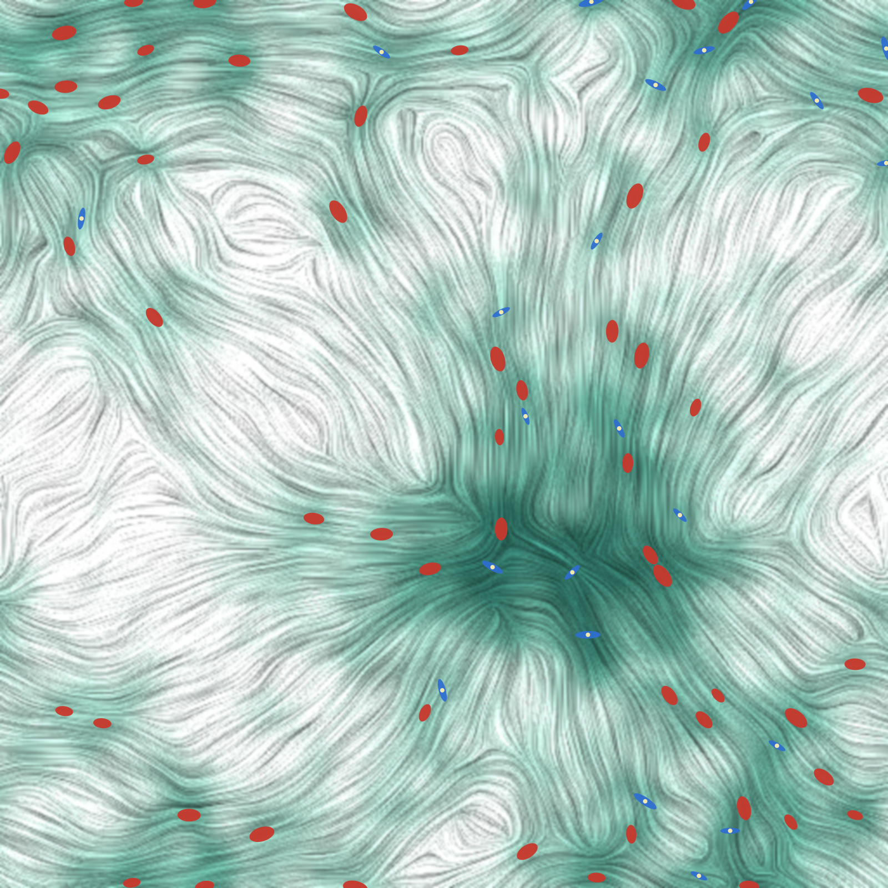
Spiral · NGC 3938
Elliptical · NGC 4889
Ellipticals: hot, pressure-supported, stretched by the tide
Spirals: rotating discs, spun up by it
Schematic: a density field, its tide, galaxies on the peaks.
Opening the IA section. Left: a schematic made for this deck (scripts/tidal_field.py): a 2D Gaussian random field as the density, its potential from the Poisson equation, and the tidal tensor's stretching axis drawn as a line-integral-convolution texture. Galaxies sit on the density peaks: ellipticals (orange) stretched along the local tide, so radially towards the overdensities, discs (yellow) at random angles. Not a simulation; the point is the picture, the tide coherent over tens of Mpc.
Right: two real galaxies, Legacy Surveys DR9 grz images. NGC 3938, a face-on Sc spiral in Ursa Major (z = 0.0027, ~5′ across); NGC 4889, the giant elliptical at the centre of the Coma cluster (z = 0.0215), with smaller Coma members around it. Both in the UNIONS north.
The next slides: ellipticals first (linear alignment), then what the real tide looks like in CMASS.
As galaxies form, the tide stretches them
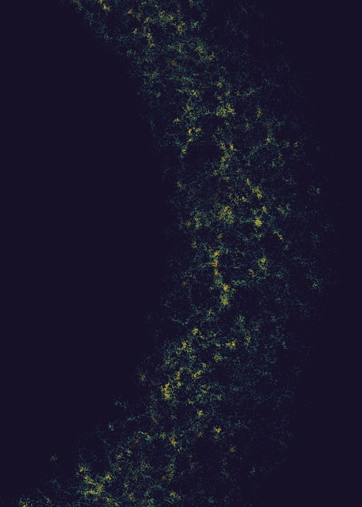
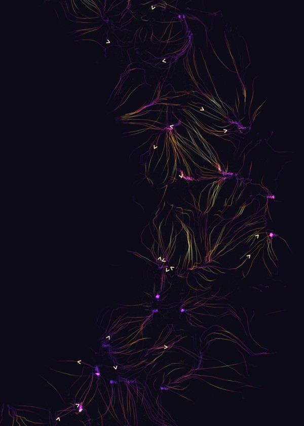
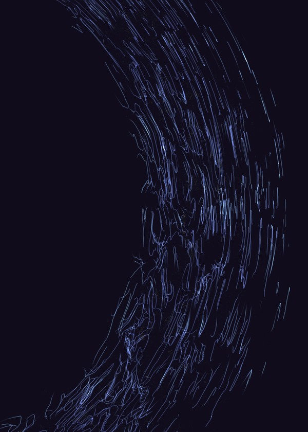
Galaxies · density
Flow · infall
Shapes · the tide
BOSS CMASS galaxies in one slab, ~180 h⁻¹ Mpc thick, with DECaLS shapes; the same patch in all three. From the IAP intrinsic-alignment workshop, June 2026.
A pressure-supported elliptical is stretched along the tidal field as it forms
Its shape: a random part plus an aligned one, \( \mathbf{e} = \mathbf{e}_r + \gamma_{\rm IA} \)
Linear alignment: \( \gamma_{\rm IA} = -\frac{C_1}{4\pi G} \left( \nabla_x^2 - \nabla_y^2,\ 2\nabla_x\nabla_y \right) \mathcal{S}(\Psi) \)
Catelan et al. 2001; Hirata & Seljak 2004.
The three panels are from Calum's IAP IA-workshop talk (June 2026; ../2606_IA_Workshop_IAP, the live "thin slice" views, captured): BOSS CMASS galaxies in a ~180 h⁻¹ Mpc thick slab through the survey shell, all three panels the same patch of sky. Left, the galaxies coloured by local density; middle, the reconstructed flow Ψ (v ∝ −∇Φ), streamlines converging on the nodes; right, the DECaLS shape field, each galaxy's orientation (e₁, e₂) drawn as a streamline, brighter where neighbours agree: the tide, written in the shapes (γ ∝ ∂∂Φ). The old Moriond drawing (fig/ia_story/field_round.jpg, field_stretched.jpg) is still in the folder.
The linear alignment model: the intrinsic shear is set by the tidal tensor of the primordial potential Ψ, smoothed (S) on the galaxy's scale; C₁ is the normalisation, conventionally 5 × 10⁻¹⁴ (h² M☉ Mpc⁻³)⁻¹ (Brown et al. 2002). A_IA multiplies C₁: A_IA > 0 means stretched along the direction to overdensities, radially around them. This is the alignment of red, pressure-supported galaxies.
Why it matters for this talk: lensing by the same mass shears background galaxies tangentially, so radially aligned foreground galaxies cancel part of the cosmic-shear signal (the GI term), and aligned neighbours add a spurious one (II). Two slides on.
Aligned galaxies lower the lensing signal
Lensing makes background shapes tangential around mass
Radially aligned galaxies cancel part of it
Here about 5% of the lensing power, at every scale
Cosmic shear marginalises over AIA , so its prior matters (Cail)
Moriond page 13. Left: cosmic shear (two shapes); right: galaxy-galaxy lensing (a position and a shape); blue without IA, red with; lower panels the fractional change, about −5 to −6% at all multipoles for the configuration in that figure. Check with Calum which A_IA and n(z) the figure assumed before quoting a number beyond "about five per cent".
A few per cent at every scale is degenerate with the amplitude of the lensing signal, so with S8. Cosmic-shear analyses fit A_IA (and its redshift and luminosity dependence) along with cosmology; a prior from direct measurements, like the next four slides, tightens S8.
Alignments are measured like shear, with redshifts
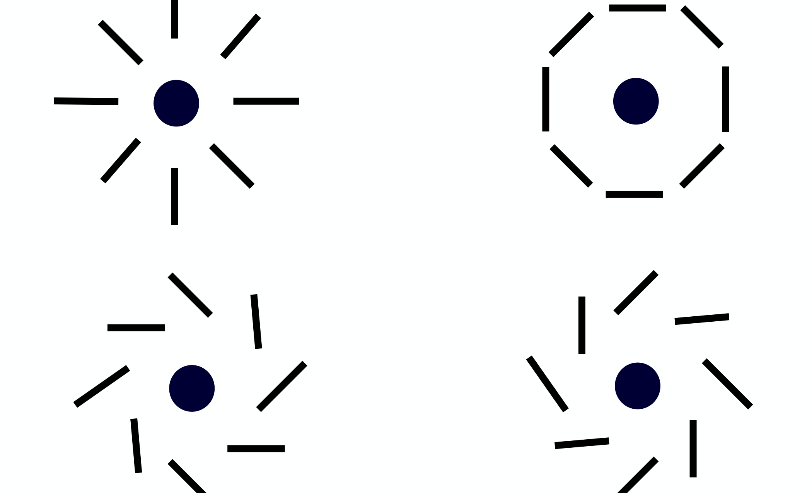
radial · AIA > 0
tangential · AIA < 0
e× , rotated by 45°: must vanish
Average the shapes around galaxy positions: radial or tangential
Spectroscopic redshifts keep the pairs physically close, so it is alignment, not lensing
The cross component is the null test
Here: UNIONS shapes around BOSS and DESI galaxies
Moriond page 5 ("Intrinsic alignment shear is written the same as weak lensing shear"), with its labels cropped. SIGN: Moriond labelled the radial pattern ⟨δe₊⟩ < 0, the weak-lensing convention (tangential positive). The IA papers on the next slides use the opposite: w_g+ > 0 and A_IA > 0 for radial alignment, negative for tangential (Paviot et al. 2026, Fig. 4 caption). The slide's labels follow the IA convention, so the numbers on slides 9–12 read directly.
The measurement: for every position-shape pair at projected separation r_p and line-of-sight separation Π, project the shape onto the line joining them; average and integrate over |Π| < Π_max to get w_g+(r_p), or fit the multipoles of ξ_g+(s, μ). The 45°-rotated w_g× vanishes by parity and is the null test.
Spectroscopic redshifts (BOSS CMASS, DESI BGS / LRG / ELG) select pairs that are physical neighbours, so lensing between them is negligible. Moriond page 14 made the same point: "we want physical distances: we need redshifts".
Hervas Peters et al. 2024
UNIONS measures intrinsic alignments directly
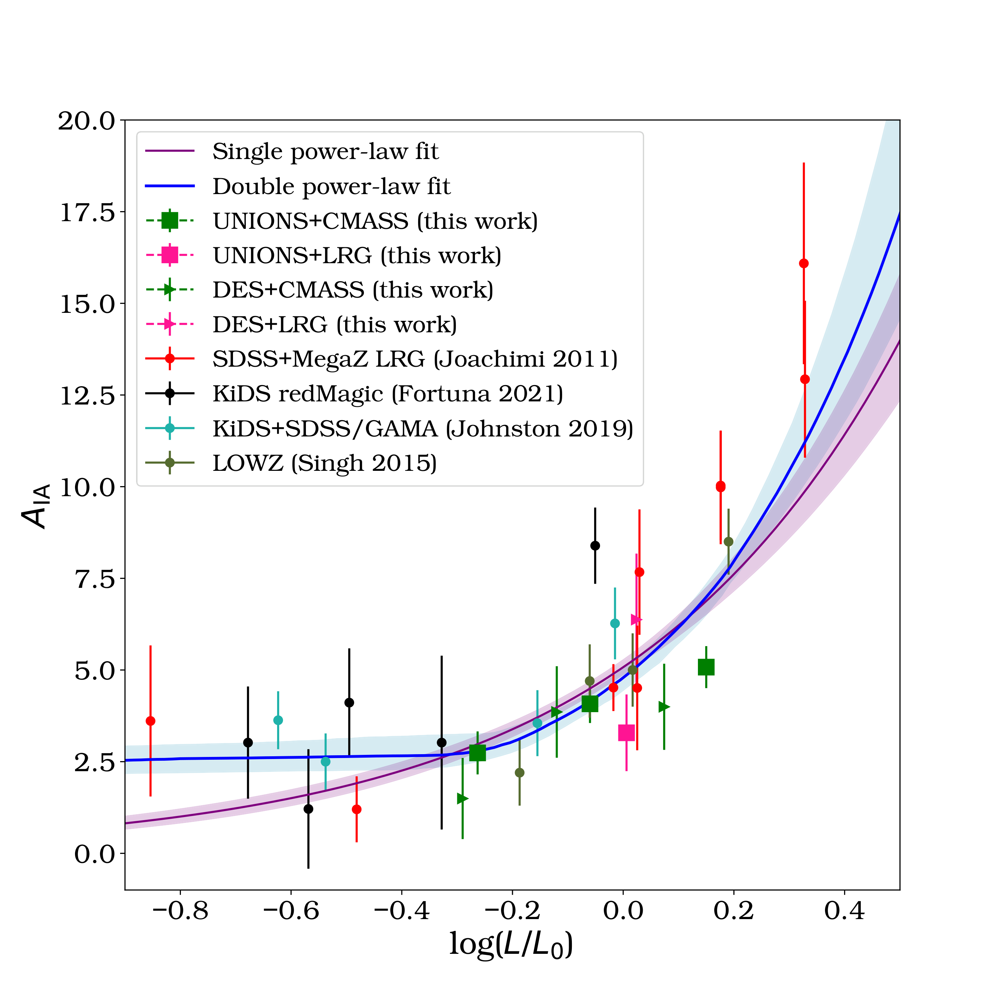
UNIONS shapes around BOSS/eBOSS CMASS, LRG and ELG
Strong detection for the red samples, scaling with luminosity as in DES
Used to inform the IA prior of the UNIONS cosmic shear (Cail)
before this we need explanations of IA. please bring in my slides on IA from the paris meeting I organised, place these slides within the talk repo then add some explanations here please
Copied the IAP IA-workshop decks (June 2026) with their figures, cutouts and talk PDF into the talks repo as 2606_IA_Workshop_IAP (README there). Added three slides before this one: 9a why IA matters for lensing, 9b the LTA templates around a halo and a void from the IAP talk, 9c how w_g+ is measured. The "Intrinsic alignments" section now starts at 9a.
Revised on Calum's request (chat, 1 Nov): 9a–9e now come from his Moriond talk (linear alignment and tidal torquing on the tidal-field map, IA lowering the lensing spectra, e₊ and e× sticks) and the IAP shape-field view of CMASS.
Fabian Hervas Peters et al. 2024, "UNIONS: a direct measurement of intrinsic alignment with BOSS/eBOSS spectroscopy", arXiv:2412.01790. Top: their WGP_all (r_t w_g+ for CMASS-, LRG- and ELG-UNIONS, best-fit NLA, grey = outside the fit). Bottom left: Full_lum (A_IA against luminosity across surveys, CMASS-DES and CMASS-UNIONS scaling alike).
The third bullet follows Sacha's Moriond slide ("direct measurement used in the cosmological analysis, see Cail's talk"). Check with Cail how exactly the UNIONS-3500 IA prior used it before saying so; his slide 13 at Moriond showed S8 sensitive to the IA prior, a natural hand-off.
Lineage for the next three slides: Fabian → Antonin (DESI DR1, every galaxy type); Romain → Calum (blue galaxies).
DESI DR1 galaxies; images from the Legacy Surveys
DESI measures four kinds of galaxy, out to z ≈ 1.6
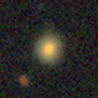
BGS · red
z ≈ 0.1–0.4
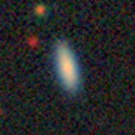
BGS · blue
z ≈ 0.1–0.4
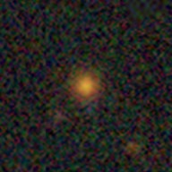
LRG
z ≈ 0.4–1.1
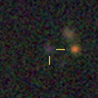
ELG
z ≈ 0.8–1.6
Every stamp is 24″ across: the distant galaxies are small and faint, so their shapes are noisier
Red or blue, elliptical or disc: the alignment can differ for each
Two real galaxies per DESI DR1 sample, picked from Romain's catalogues (candide /n09data/rpaviot/DESIxUnions/catalogues: BGS_RED_GMM, BGS_BLUE_GMM, LRG, ELG_LOPnotqso), in the UNIONS north, unmasked, near the typical redshift of each sample and in the larger half by size so they are visible. Images: Legacy Surveys DR9 grz, 0.125″/px; every stamp is 24″ across. The ELGs are r ≈ 23 and barely resolved; the yellow ticks point at them. TARGETIDs, redshifts and masses: fig/galaxy_types/README_picks.txt.
Shown: BGS red at z = 0.155 and 0.235 (log M★ ≈ 11.0); BGS blue at z = 0.19 and 0.13; LRG at z = 0.56 and 0.52 (log M★ ≈ 11.2–11.4); ELG at z = 0.92 and 1.06 (log M★ ≈ 8.6–9.9).
Sample medians in Romain's catalogues: z = 0.23 (BGS red and blue), 0.75 (LRG), 1.16 (ELG). The redshift ranges on the slide are the DESI clustering ranges.
BGS red/blue is Romain's colour split (a Gaussian mixture in colour). CMASS on the next slide is the BOSS equivalent of the LRGs (z ≈ 0.4–0.7).
A. Corinaldi (PhD), in preparation
With DESI DR1, alignment amplitude depends on galaxy type
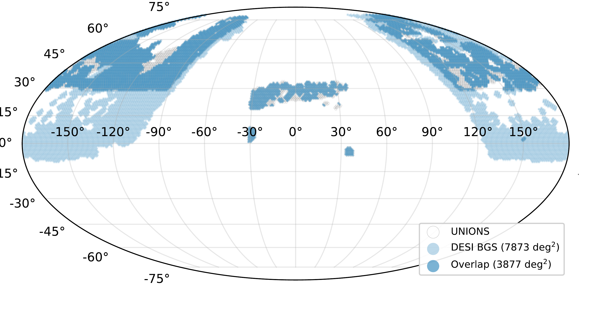
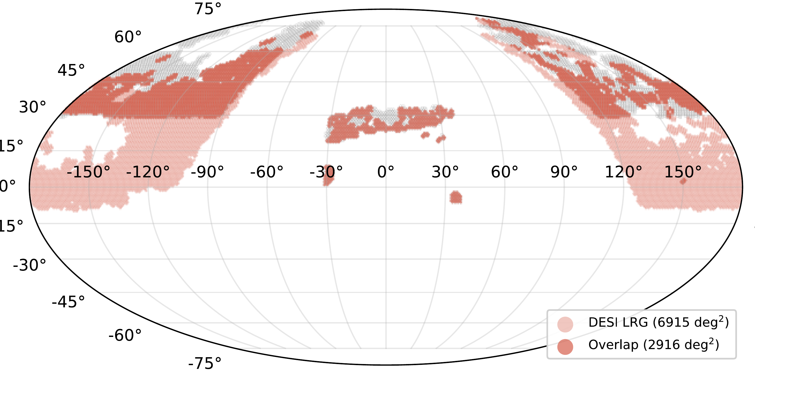
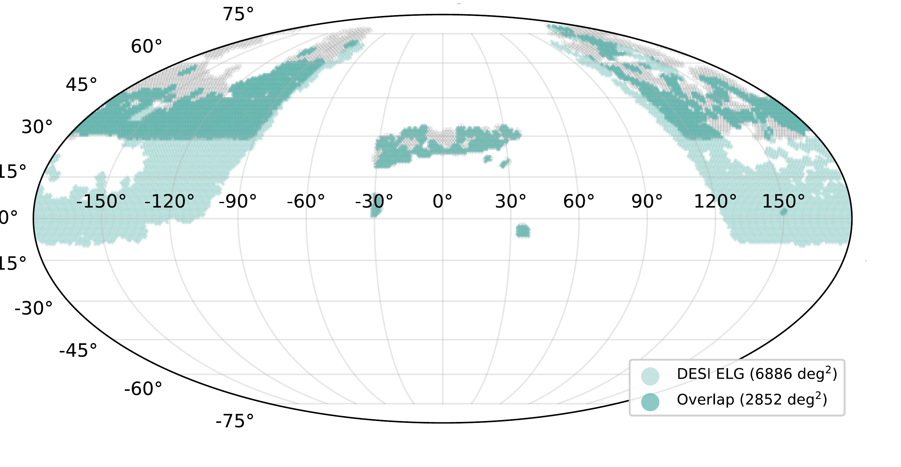
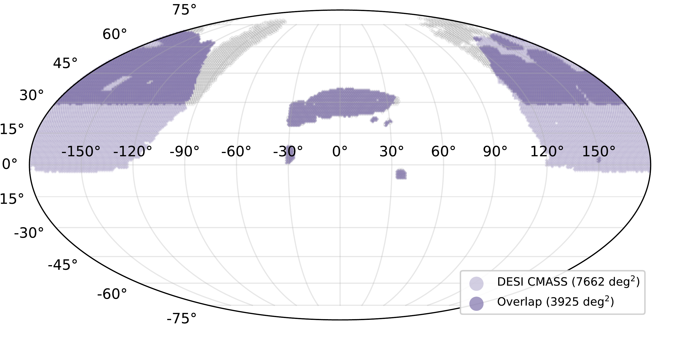
UNIONS shapes for 1.8 M spectroscopic galaxies
CMASS and LRG align most, BGS less, ELG consistent with zero
The cross term ξg× is null
ATTRIBUTION TO CHECK: these figures are from Calum's Hefei talk (July 2026, authors Murray, Paviot, Kilbinger, Corinaldi, Codis; slides 13 and 25), which does not say who made them. They are put here as Antonin's line of work (Fabian → Antonin) on Calum's instruction; confirm before the talk.
Left: UNIONS × DESI DR1 BGS, LRG, ELG and BOSS CMASS on the sky. Right: galaxy-shape monopole ξ_g+,0(s) and the parity null ξ_g×,0 per sample.
Matched counts: BGS 1,014,347; LRG 329,820; ELG 265,697; CMASS 195,529 (1.8 M in all).
Antonin's thesis: IA with UNIONS, DESI and Euclid (PhD since Sept 2025, with M. Kilbinger and S. Codis); he is also preparing a paper on tidal-alignment templates with AbacusSummit (Hefei slide 39).
Paviot et al. 2026, arXiv:2610.40411
Red galaxies align radially; massive blue ones tangentially
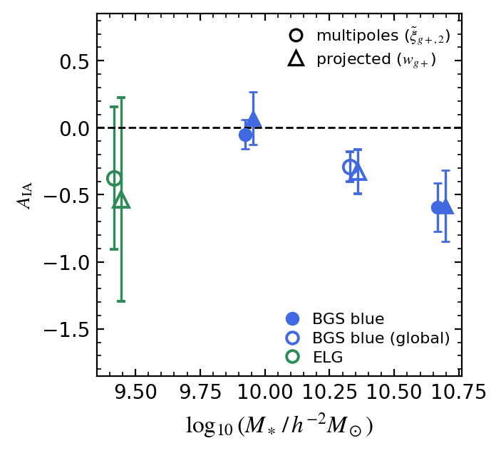
DESI DR1 with UNIONS shapes, up to 2,400 deg²
Red: flat at low mass, steep above 10¹³ h⁻¹ M☉
Massive blue: AIA = −0.59 ± 0.18 , tangential at 3.3σ
Low-mass blue and ELG: consistent with zero
Paviot et al. 2026, "UNIONS: Red and blue alignments of DESI DR1 galaxies", arXiv:2610.40411 (29 October 2026; Paviot, Murray, Kilbinger, Daley, Hervas Peters, Corinaldi, et al.). Public now, so the earlier "ask Romain first" no longer applies; still worth telling him it is shown. Figures are the arXiv versions (results/fig3_aia_vs_mass_red.png, fig6_aia_vs_mass_blue.png of the source).
Data: DESI DR1 BGS, LRG and ELG × UNIONS shapes, 2,400 deg² for BGS and 1,200–1,250 deg² for LRG and ELG. Fits: the clustering monopole and the galaxy-shape quadrupole of ξ(s, μ) jointly, NLA; w_g+ as a check.
Left, red: A_IA against an effective halo mass from a CSMF fitted to the BGS red galaxy-galaxy lensing. A single power law fails (χ² 96.8/20); a broken one fits (32.3/18): β₁ = −0.24 ± 0.09 below M_b = 1.3 × 10¹³ h⁻¹ M☉ (log 13.11 ± 0.06), β₂ = 1.74 ± 0.29 above. Below the break A_IA ≈ 1–2, nearly flat: a single power law extrapolated to faint sources mispredicts it both ways. Partly in tension with Fortuna et al. 2025 (KiDS LRGs) over the common mass range.
Right, blue: BGS blue global A_IA = −0.29 ± 0.11 (2.6σ); low-mass half −0.05 ± 0.11; high-mass half (log M★ ≈ 10.7) −0.59 ± 0.18, 3.3σ (2.2σ model-independent), "to our knowledge the most significant detection of a non-zero alignment of blue galaxies to date". ELG: −0.37 ± 0.53, −1.4 < A_IA < 0.7 at 2σ. TATT is not favoured over NLA; the tangential signal is carried by the tidal-alignment term, not tidal torquing.
Negative A_IA = tangential alignment, the opposite sign to red galaxies (slide 9e).
SPHEREx redshifts trace the cosmic web over the whole sky
Legacy Surveys positions, redshifts from SPHEREx alone (LSx, preliminary), z = 0.07 to 0.37. Orange: the UNIONS footprint.
The LSx v0.9 sky movie from calumhrmurray.github.io/spherex-sky.html (assets/spherex/allsky_redshift_oldstyle.mp4, 37.6 s, 29 MB): shells climb from 0.07 < z < 0.10 to z = 0.37 in ~14 s, then sweep down and up; it loops here. Orange: the final UNIONS footprint (DR6 tiles), drawn in the movie's projection (scripts/spherex_unions_overlay.py). Each point is a Legacy Surveys galaxy with a redshift from its SPHEREx spectrum alone, no optical bands in the fit; this shell holds 1,096,235 galaxies.
This catalogue is what the next slide uses: Legacy Surveys shapes, positions with SPHEREx redshifts, over the whole extragalactic sky rather than the UNIONS footprint.
Preliminary: the catalogue report says no number from it may be quoted as a release number. Against DESI and other spectroscopic surveys, σ_NMAD runs from 0.005 at r ≈ 16 to 0.013 at r ≈ 20.5 with a few per cent outliers at the faint end (final_v2 report, §5.2); say "about one per cent" if asked.
Murray et al., in preparation · UNIONS shapes, SPHEREx redshifts
With UNIONS shapes, discs align tangentially with the tide
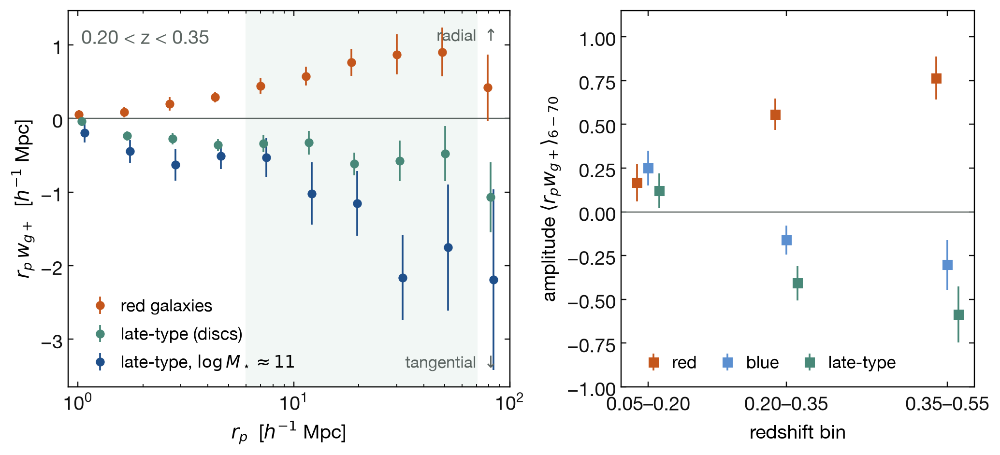
4.3 M SPHEREx galaxies, UNIONS shapes: same signs as with Legacy Surveys shapes
Discs tangential above z = 0.2 (massive ones A = −0.99 ± 0.21); red galaxies radial
Data: UNIONS ShapePipe v1.6 metacal shapes (comprehensive catalogue, ngmix flags = 0, v1.6.9 masks) matched within 1″ to the LSx v0.9 galaxies, whose positions and redshifts come from SPHEREx: 4,258,993 matched shape galaxies over the 5,559 deg² overlap; density tracers are all LSx galaxies of the z bin; 40 jackknife patches. Nibi: ~/intrinsic_alignments/docs/unions_overlap.md and docs/figures/unions/wgp_unions.json (src/probes/unions_figs.py, 2026-10-23). Figure redrawn for this deck from that JSON (scratch script, matched samples only).
Left, 0.20 < z < 0.35: r_p w_g+ with UNIONS shapes for red (colour), late-type (morphology, all colours) and late-type in the top mass bin (median log M★ = 11.1). Grey band: the 6–70 h⁻¹ Mpc fitting range. Right: the amplitude A = GLS-weighted mean of r_p w_g+ over 6–70 h⁻¹ Mpc, jackknife errors.
Numbers (A, UNIONS shapes): late-type −0.41 ± 0.10 (z 0.20–0.35), −0.59 ± 0.16 (0.35–0.55), +0.12 ± 0.10 (0.05–0.20); late-type log M★ ≈ 11: −0.99 ± 0.21; blue −0.16 ± 0.08, −0.30 ± 0.14, +0.25 ± 0.10; red +0.17 ± 0.11, +0.56 ± 0.09, +0.76 ± 0.12. Positive = radial. w_g× consistent with zero everywhere.
The point of this slide: on identical galaxies the UNIONS and Legacy Surveys (Tractor) amplitudes agree for blue and late-type to |ΔA| ≤ 0.10 (paired jackknife), so the tangential disc signal is in the galaxies, not the shape measurement. Red and early-type are 20–40% weaker with UNIONS shapes (z1 red ΔA = −0.23 ± 0.02) with the same sign; cutout tests rule out radial weighting and Tractor misfits, so it is a survey/estimator difference still being understood. Don't quote a red amplitude as "the" value.
Not the same split as the paper: "late-type" here is the morphology class of the pipeline (iacorr.py), not the paper's blue-disc cut (blue AND Sérsic n < 1.5); significances in the paper are for the full Legacy Surveys footprint. The previous Legacy-shapes figure is fig/ia_blue_discs_wgp.png if wanted as backup.
Cosmology from UNIONS
The 2D cosmic-shear release, and the road to tomography.
Handover — Calum to Cail; the rest of the talk is the cosmology.
Cosmic shear benefits from independent measurements
$S_8$ seems to be converging as systematics improve; consensus is important!
But the northern sky has no wide-field lensing surveys
DES/KiDS/LSST MOCs · HSC Y3 fields · ESA Euclid Wide / DR1 VIS. Band: CMB.
Left — published Stage III cosmic-shear $S_8$, oldest at the top; the band is the CMB.Right — DES, KiDS and HSC overlap one another, almost all at or below the equator (HSC's small HECTOMAP field at Dec +43° is the exception). Dashed outlines show LSST WFD and Euclid Wide; the solid outline shows observed Euclid DR1.Reading — the newer analyses (KiDS-Legacy, DES Y6) have moved towards the CMB as systematics control improved; nothing north of $+30^\circ$ adds an independent measurement.
Numbers KiDS-1000 $0.759^{+0.024}_{-0.021}$; DES Y3 $0.759^{+0.025}_{-0.023}$; HSC Y3 $0.769^{+0.031}_{-0.034}$; KiDS-Legacy $0.815^{+0.016}_{-0.021}$; DES Y6 $0.798^{+0.014}_{-0.015}$; CMB $0.836^{+0.012}_{-0.013}$. Values as in the Moriond 2026 UNIONS talk.
Sources Globe by figures/survey_globe.py; S8 comparison by figures/s8_landscape.py. Footprint products and caveats in figures/data/footprints/README.md (Euclid Wide from ESA's public reference-survey map). Camera at Dec +40°; one turn takes 24 s.
UNIONS adds deep wide-field lensing constraints in the North
Different instrument, on-sky systematics, sample variance; new cross-correlations
DES/KiDS/LSST MOCs · HSC Y3 · ESA Euclid Wide / DR1 VIS · UNIONS DR6.
Purple — the UNIONS DR6 tiles, mostly above declination $+30^\circ$, with essentially no overlap with DES or KiDS; only HSC's small HECTOMAP field lies inside it.Why it matters — a different telescope (CFHT/MegaCam), different on-sky systematics and independent sample variance.Cross-correlations — the northern sky holds DESI spectroscopy and CMB lensing from Planck and ACT.
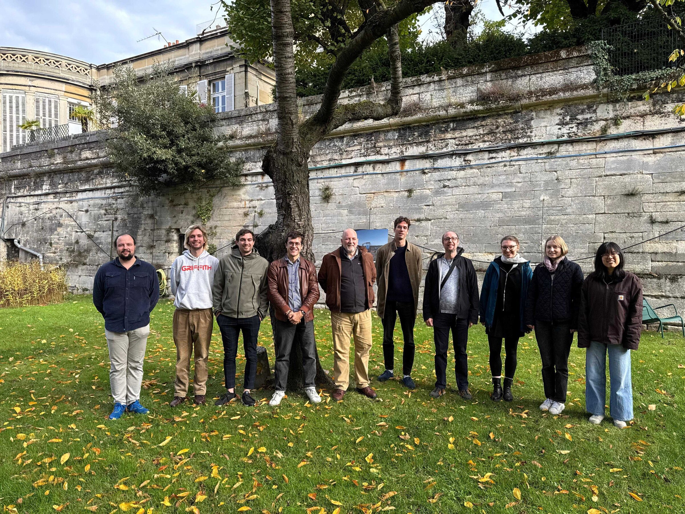
The 2D cosmic shear team
The team — the core 2D team at the team meeting in Paris; many others have contributed over the years.
Paper I: a shape catalog of 61 million galaxies in the northern sky
Hervas-Peters et al. 2026
3648 deg²
$n_{\rm eff} = 4.96$ arcmin$^{-2}$
$\sigma_\epsilon = 0.27$
$r$-band, PSF FWHM 0.71″; ShapePipe metacalibration shapes.
The catalog goes public on acceptance, in the next few months.
B-modes are mitigated by cutting CCD- and large-scales
All scales (left) · fiducial scale cuts (right) · ● configuration, □ harmonic space
Suggestive of repeating CCD-scale additive bias
$\xi_\pm^B$, $C_\ell^{BB}$ and $B_n$ do not always agree, due to different weighting of scales
Paper II — B-mode validation (Daley et al.): the gatekeeper that chose the catalog version and the scale cuts.Bottom row — the paper figure's $B_n/\sigma_n$ row ($E_n$ row cropped off). Shaded: modes $n > 6$; the cosmological information sits at $n \le 6$. Left — over all scales ($1$–$250'$) COSEBIs fail: the oscillating $B_n$ pattern that Asgari et al. 2019 associated with repeating additive shear bias at the CCD scale. Config- and harmonic-space COSEBIs agree, so it is the filter weighting, not the basis.Right — with the fiducial cuts, $[12, 83]'$ and $\ell = 300$–$1600$, the B-modes are consistent with zero; all PTEs $> 0.18$.Three statistics — over the full range $\xi_\pm^B$ and $C_\ell^{BB}$ pass while COSEBIs fail; each weights scales differently, so we require all three to pass. We could not decisively identify the origin.
Sources Paper II (Daley et al. 2026), Figures/harmonic_config_cosebis_full.pdf (E_n top, B_n/σ_n bottom). Same B_n as the Moriond slide 10; since the referee round modes n > 6 are shaded, the cosmological information sitting at n ≤ 6.
Paper III jointly fits cosmology and PSF leakage in real space
$\xi_\pm(\theta)$ with best-fit model and leakage systematics · Goh et al. 2026
Paper IV provides harmonic-space constraints from the same data
Same catalog, $n(z)$ and blinding, but different basis and weighting of scales
Guerrini et al. 2026
$S_8$ to about 8%, consistent with the CMB and Stage III
Configuration space
$S_8 = 0.831^{+0.067}_{-0.078}$
Harmonic space
$S_8 = 0.891^{+0.057}_{-0.084}$
With one redshift bin, the intrinsic-alignment prior dominates the error: dropping IA moves $S_8$ by $0.7\sigma$.
Squares — the two UNIONS results; circles are the Stage III surveys of the previous slide.Agreement — both are within $1\sigma$ of the CMB and of Stage III.Limitation — $A_{\rm IA}$ and $S_8$ are nearly degenerate with one bin; tomography breaks that.
Numbers Goh et al. 2026 ($\xi_\pm$): $S_8 = 0.831^{+0.067}_{-0.078}$. Guerrini et al. 2026 ($C_\ell$): $S_8 = 0.891^{+0.057}_{-0.084}$. The two analyses' $\Delta S_8$ sits at about $2\sigma$ of the scatter between pipelines measured on 350 GLASS mocks. Robustness tests in Goh et al. move $S_8$ by under $0.4\sigma$ except the IA treatment: no IA $-0.71\sigma$, flat $A_{\rm IA}$ prior $+0.38\sigma$.
Sources Figure made by figures/s8_landscape.py; Stage III and CMB values as on the previous slides.
The next year: tomography
A new shape catalog over the full footprint, released quickly, and the first tomographic UNIONS cosmic shear.
Outlook — the plan for the coming year; everything from here on is working and blinded.
Next year: a fast catalog release, then tomographic cosmic shear
v2 shape catalog
Shapes over the full DR6 footprint, with its paper; we plan to make it public quickly.
Tomographic cosmic shear
Four redshift bins from DR6 photometry, a blinded analysis on the v2 catalog.
Tomography lead
Klara Bertmann · Bochum
Catalog first — the v2 catalog and its paper come first, and we intend to release the catalog fast.Tomographic paper — led by Klara Bertmann (Bochum); multi-band image simulations and a SOM $n(z)$ calibration feed it.What follows — where that stands today: the footprint, the redshift bins.
ShapePipe v2 has measured shapes over the full DR6 footprint
Animation — the v2 production run, 10–27 October 2026: each DR6 tile lights up with the blinded mass map as its shapes complete.Plays once — and stops on the full footprint, about 5700 deg² of tiles before masking.
A full v2 catalog run now takes about three weeks
4690
deg² of shapes, v2 catalog
773 M
objects measured
~3 wk
per full run; over a year for the 2D catalog
Area — the v2 bound-9 shape sample after masking; the 2D release had about 2400 deg² effective.Objects — every object ShapePipe measured on the 22,901 DR6 tiles of the first v2 production.Run time — wall-clock for a full catalog run, against about nine months for the catalog behind the 2D release.
DR6 photometry splits the v2 sample into four redshift bins
Working n(z) · BPZ + SOM
$\langle z\rangle$ = 0.29, 0.45, 0.61, 0.93
Half the shear weight has the photometry, over 3815 deg².
For validation and null tests, not for parameters.
Colours — the four bins, each drawn as its share of the shear weight, so they add up to the dashed total.Status — a working $n(z)$ built for validation; the collaboration's $n(z)$ for parameters comes from the photo-z group.
What is plotted DR6 BPZ photo-z bins calibrated with a SOM on the full-area v2 bound-9 sample, using either $z$ filter where available; 51% of the bound-9 shear weight is retained. Lightly smoothed for display ($\Delta z = 0.01$ grid).
Sources nz_v2_full products (nz_v2_bound9_full_tomo.txt), drawn by figures/nz_v2.py.
UNIONS: Weak lensing in the Northern sky
First northern-sky cosmic-shear constraints: $S_8$ to about 8%, consistent with the CMB and Stage III
One redshift bin leaves $S_8$ degenerate with intrinsic alignments
The 2D catalog goes public on acceptance, in the next few months
Next year: the full-footprint v2 catalog, released quickly, and tomographic cosmic shear cail.daley@cea.fr
Summary — then the team, then the mass map for questions.
Thank you!
The map — a Kaiser–Squires convergence ($\kappa_E$) map of the v2 shape catalogue, 5409 deg² of tiles, smoothed at 30′, composited into the dusk sky over the Eiffel Tower.Questions — loops while questions run: the new v2 mass map, about 5000 deg², over Paris.Blind — divided by its own rms, so its amplitude carries no $S_8$ information.
References and previous UNIONS talks
Sacha’s published HTML was confirmed in gh-pages; Cail’s Pages path returned 404, so link the source.
$S_8$ is robust to analysis choices but sensitive to the IA prior
Goh et al. 2026
Most robustness tests shift $S_8$ by $\lt 0.4\sigma$
$A_\mathrm{IA}$ is the dominant nuisance: largely unconstrained, removing it shifts $S_8$ by $0.7\sigma$


 Paper I: shape catalog (Hervas-Peters et al.)
Paper I: shape catalog (Hervas-Peters et al.) Paper II: B-mode validation (Daley et al.)
Paper II: B-mode validation (Daley et al.) Paper III: configuration-space constraints (Goh et al.)
Paper III: configuration-space constraints (Goh et al.) Paper IV: harmonic-space constraints (Guerrini et al.)
Paper IV: harmonic-space constraints (Guerrini et al.)